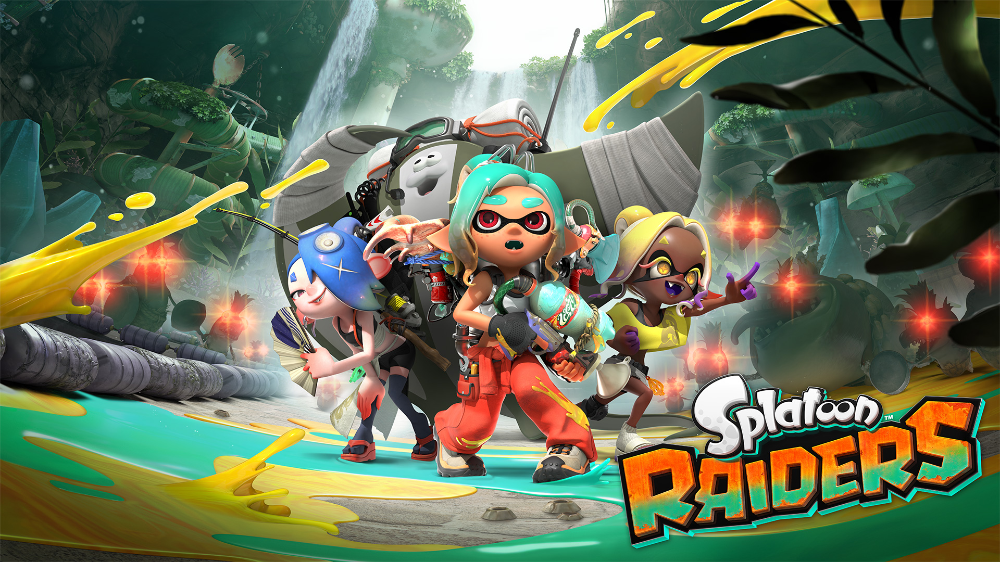

🔥🔥🔥
塞尔达传说 时光之笛 Switch 2 锁 11/05
Zelda 40 周年 Direct 已播：时光之笛重制锁档 + 周年机 10/29。
- 库
- 游戏行业 · 展会片单
- 日期
- 2026-09-08 22:00 CST
- 平台
- Nintendo Switch 2
今日主线是塞尔达传说 40 周年 Direct（昨 22:00 CST 已播）：《塞尔达传说 时光之笛》Switch 2 新锁 2026-11-05，周年机 10-29。独立侧《吞吞堡垒 Wanderburg》Steam EA 已解锁；另有《卡莉亚的炼金工房》定档 2027-02-25。二次元《绝区零》3.2「她与她的隐秘往事」今日停服更新。AI：ChatGPT Images 2.5 上架；另有 OpenAI Navier–Stokes 研究帖（内部模型，非旗舰）。今日无新旗舰；今日无新 MCP/Skill 推荐。今晚 Nintendo Direct 22:00 CST 未播不写片单。
判定：展会新锁日 + 独立 EA 翻牌 + 二游版本日；旗舰轴安静。不复述鬼武者百万、幻珠奇港、Lightspeed Lina、Okko、SF6 Arjun、MH 充能斧、Astra/Gemini/Fable、AWS/Baseten MCP、SoP、夜勤人2。
Zelda 40 周年 Direct 已播：时光之笛重制锁档 + 周年机 10/29。
「她与她的隐秘往事」06:00 起维护约 5 小时；锋御职业 + 克拉蕾上半卡池。
Randwerk 移动城堡 Roguelike 已开抢先体验；Steam 简中店名「吞吞堡垒」。
Gust《追忆》系列第二作全球锁 2/25；Steam 简中店名已核。
OpenAI 图像模型新档上架；非 LLM 旗舰。
游戏开发观察今日无达门槛新增，空库未出 Tab。今晚 Nintendo Direct 未播不预写。
判定：展会 + 版本日主导；旗舰轴安静，图像模型另记。
今日无新旗舰；今日无新 MCP/Skill 推荐。窗内有图像模型新档 ChatGPT Images 2.5（GPT-Image-2.5 Flare / Sunburst），记应用/专用模型轴，不当 LLM 旗舰。
判定：图像模型有增量，文本旗舰安静日。
OpenAI 于 9/8 推出 ChatGPT Images 2.5，并在 API 上架 GPT-Image-2.5 Flare（默认高质快生成）与 Sunburst（精细编辑）；官方称相对 Images 2.0 延迟最高可降约 50%。
来源：OpenAI News Index（Introducing ChatGPT Images 2.5 · Sep 8） · OpenAI Models · 交叉 9to5Mac
OpenAI 9/8 发帖称，其内部多智能体系统（所用内部模型「显著强于 GPT-6 Astra」、训练仍在继续）产出 Navier–Stokes 存在与光滑性相关解析证明与 Lean 形式化，并声明无意申领 Clay 奖金。
今日无新 MCP / Skill / 工作流推荐。窗内未见可独立安装的一线官方新推荐条（Aave MCP 等二线稿未能核到窗内官方首发落款，不进正文）。
行业主线：Zelda 40 周年 Direct 片单（时之笛新锁）+ 独立《吞吞堡垒》EA 解锁。今日有独立游戏观察新增。今晚 Nintendo Direct 未播不写第二份片单。
判定：展会新锁优先；独立 EA 有店页硬落款才进正文。
任天堂于 9/8 22:00 CST 播出塞尔达传说 40 周年 Direct：首次实机演示《塞尔达传说 时光之笛》Switch 2 版并锁 2026-11-05；周年主题 Switch 2 主机套装 10-29；真人电影正式定名。


| 作品 | 类型 | 档期 / 平台 | 备注 |
|---|---|---|---|
| 塞尔达传说 时光之笛（The Legend of Zelda: Ocarina of Time） | 新锁 | 2026-11-05 · Switch 2 | 数字 $59.99；店页已写 Releases 11/5/26 |
| Nintendo Switch 2 – The Legend of Zelda – 40th Anniversary Edition | 新锁（主机） | 2026-10-29 | 含主题底座；同日 Pro 手柄 / 收纳包 |
| The Legend of Zelda（真人电影） | 正式定名 | 2027-04-30（档期 5 月已锁，不新） | 无副标题；宫本茂参与 |
| Young Link / Young Zelda amiibo | 新锁 | 2027 | 扫入时之笛解锁复古风面具 |
| Mineru’s Construct amiibo（王国之泪） | 已定档跟进 | 2026-09-17 | 片中提醒，不单开 |
| 条目 | 要点 |
|---|---|
| 时光之笛玩法增强 | 自由跳跃 / 冲刺、右摇杆镜头、过场全语音（林克除外）、Threads of Time 进度毯、可用麦克风哼唱吹笛 |
| ZELDA NOTES | 扩展支持时之笛：今日记录、传闻任务、手机笛、2000+ 题测验 |
| 演唱会 / 博物馆 / 周边 | 2027 全球巡演；Nintendo Museum 周年票 9/9 起；乐高 / Hasbro 等 2027 |
柏林合作社 Randwerk 的移动城堡 Roguelike《吞吞堡垒 Wanderburg》已于 9/8 解锁 Steam 抢先体验；简中店名「吞吞堡垒」，截稿可见用户评价累计约 326。

另记观察清单：田园乐土（Folklands，Steam 简中名）厂商 Games Press 称 9/9 出 1.0；截稿 API 仍含「抢先体验」标签，未核翻牌，不进正文。
光荣特库摩 / Gust 宣布《追忆》系列第二作《卡莉亚的炼金工房 ～夜之王国与追忆之道标～》全球锁 2027-02-25（Steam 简中店名已核；部分店页时区显示 2/24）。
Dotemu《绝对魔权》由 Playdigious 移植手机，锁 2026-11-05；触控 UI + 云存档，Android 可与 PC Google Play Games 跨进度。
来源：Gematsu
二次元主线：《绝区零》3.2「她与她的隐秘往事」今日停服更新。原神「禁界拟想阵地战」未见窗内新一线增量，仍待核。
判定：版本开门日达门槛；米游社「已开启」原帖 ID 截稿未核到。
米哈游排期 9/9 06:00 CST 开始版本维护（预计约 5 小时，约 11:00 开门）：3.2「她与她的隐秘往事」导入新职业「锋御」，上半限定 S 克拉蕾。
来源：官方预下载/更新通知交叉（HoYoverse 日程镜像整理）· 进服后以游戏内 / 米游社公告为准
综合日报 · 2026-09-09 · 窗口 (2026-09-08, 2026-09-09] · 观察台 https://gamecrazy.github.io/daily-intelligence-hub/